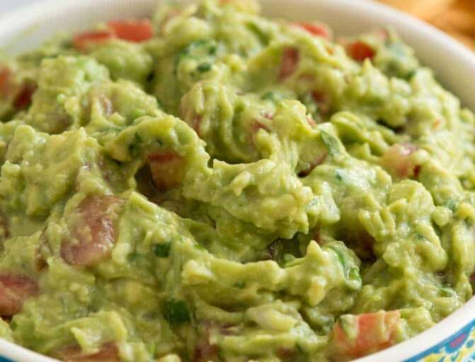

Guacamole

Creamy Guacamole
This easy guacamole recipe is quick and simple to make.
Great with tortilla chips or as a topping for fajitas!
Ingredients
- 2 ripe avocados, peeled and pitted/li>
- 1 small onion, finely chopped
- 1 ripe tomato, chopped
- 1 clove garlic, minced
- 1 lime, juiced
- salt and pepper to taste
Steps
- Combine ingredients in a bowl and enjoy with chips!